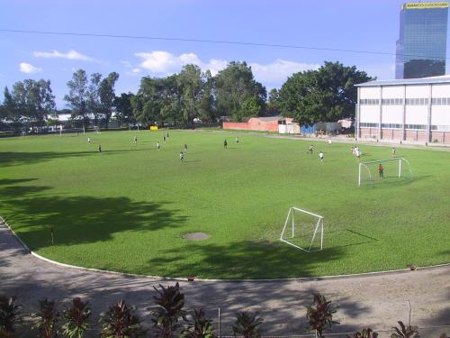
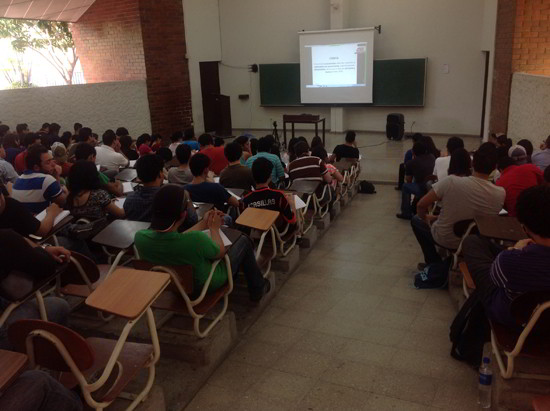

Lunes
El dia lunes todos llegamos a nuestra clase de programacion Web a las 3:30 de costumbre, entonces Nestor nos comento que ibamos a hacer una actividad grupal la cual equivaldria a una nota de JavaScript que aun estaba pendiente por realizarse pero al finalizar de explicarnos en que consistiria nos dijo que nadie se podria retirar hasta que la clase finalizara porque nos tenia una sorpresa o algo asi, no recuerdo exactamente las palabras que uso,eso es irrelevante en este punto.
Al momento de finalizar la clase nos reproducieron un video de mala calidad y con alteracion de voz donde nos presentaban a alguien que se llama Kurt el cual necesitaba de nuestras habilidades para detener al malvado Ale Rav que buscaba destruir la universidad.
En ese mismo instante se nos compartio el primer codigo QR que contenia el primer reto que teniamos que completar para poder ayudar a Kurt y al momento de leer el reto descubrimos que esa actividad seria MUY LARGA.
Martes
el dia martes en la madrugada cuando termine de codificar la funcion solicita en el primer reto; Kurt nos envio otro mensaje codificado indicandonos que alguien le habia comentado que Ale Rav ya habia creado el codigo para detonar las bombas que destruirian las bombas. En ese mismo mensaje nos indicaba que la pista para el siguiente reto se encontraba escondido en el polideportivo. Por lo tanto ese dia en la mañana con toda la dedicacion y esfuerzo del mundo fui a buscar el codigo QR que Ada Jarvis habia escondido en este lugar.
Al momento de encontrarlo y escanearlo se nos presentaba un reto de mayor dificultad que el que habias desarrollado el dia anterior ya que Ada Jarvis consideraba que nosotros solo estabamos aprendiendo a crear funciones de juguete en la clase de Administracion de Bases de Datos y tiene un poco de razon con eso.

Miercoles
al finalizar el ultimo reto que nos habia propuesto Ada Jarvis, se nos comunico que nos debiamos acercar al atrio bajo el edificio D entre las 2pm y 3:30 pm en busca del pintor Renacho Melgar o los asistentes que estaban ayudando en ese momento a pintar un mural que se encontraba en ese lugar y con la palabra clave KURT ellos nos estarian proporcionando la siguiente pista para lograr resolver el misterio que nos deparaba en esta interesante actividad
Al momento de escanear el nuevo codigo QR que se nos compartio en ese momento nos dimos cuenta que este dentro del texto contenia un enlace con un audio de Kurt explicando que el habia conocido a Ale Rav ya que el fue su catedratico en Programacion de Estructuras Dinamicas,Bases de Datos y Administracion de Bases de datos ademas contaba que le solicito ser Instructor y que debido a esto formaron un vinculo muy fuerte y dejaron de comunicarse por metodos tradicionales y se instalaron un chip (lo cual por cierto es algo estrambotico).

Jueves
Este dia Kurt nos envio un mensaje a traves de un drone ya que se tenia que mantener oculto debido al posible ataque por parte de Ale Rav, indicando que se estaba quedando sin muchas opciones y que quiza el unico remedio seria revelar la identidad de Ale Rav a pesar de que eso tuviera graves consecuencias que lo afectarian para siempre.
Entonces con ayuda de unos compañeros logramos completar el codigo con el cual Kurt nos habia pedido ayuda y nos hizo llegar una "Invitacion" para que al dia siguiente (viernes) nos acercaramos a la Magna V a las 5 PM porque alli se haria la gran revelacion de la tan misteriosa identidad de Ale Rav y lo cual era el objetivo final de todo el esfuerzo que habiamos realizado durante la semana.
Viernes
Ya era el ultimo dia de la semana y el dia en el que finalmente la identidad de Ale Rav se nos iba a dar a conocer, a medida avanzaban las horas durante el transcurso del dia la emocion de saber quien se encontraba detras de la identidad misteriosa aumentaba a cada segundo porque descubrir esa informacion nos permitiria constatar que todo el esfuerzo y tiempo invertido en ayudar a Kurt hubiera valido la pena
Todos nos encontrabamos en la Magna V a las 5 PM esperando la tan ansiada revelacion y se nos presento un video donde se nos mostraba que Ale Rav era nuestro catedratico Varela el cual queria destruir la universidad (lo cual no me sorprendio para nada que el fuera quien quisiera hacer eso) y asi vimos por concluido el Laboratorio de Administracion de Bases de Datos mas largo de la historia.
